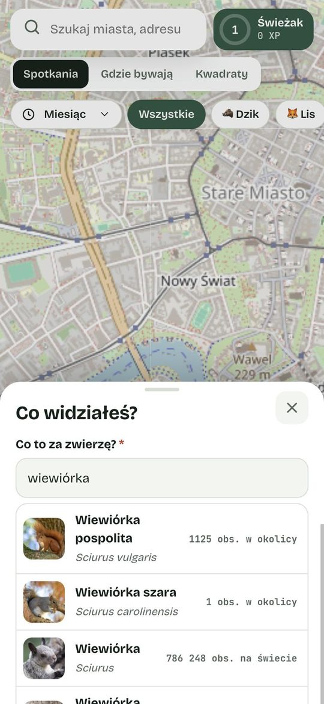
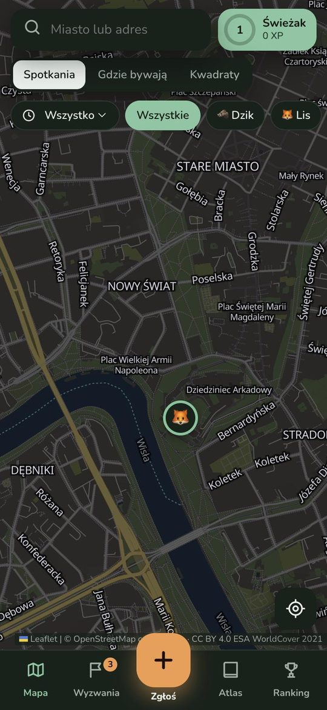

Miasto dzielimy z dzikimi zwierzętamiWe share our cities with wild animals
Widzisz dzika, lisa, sarnę albo czaplę? Zaznacz to na mapie w 20 sekund. Razem odkrywamy dzikie korytarze, którymi zwierzęta przemierzają nasze miasta.Seen a wild boar, a fox, a deer or a heron? Mark it on the map in 20 seconds. Together we uncover the wild corridors animals use to move through our cities.
Trzy kroki. Bez rejestracji.Three steps. No sign-up.
ZobaczSpot
Dzik w parku, lis na osiedlu, dzięcioł za oknem — każde spotkanie się liczy.A boar in the park, a fox on your street, a woodpecker outside the window — every encounter counts.
ZaznaczPin it
Stuknij w mapę, wybierz gatunek ze zdjęć podpowiedzi. Zdjęcie mile widziane.Tap the map and pick the species from photo suggestions. A photo is welcome.
Ucz się i zdobywajLearn and level up
Poznaj ciekawostki o gatunku, zbieraj XP, odznaki i kolejne kwadraty mapy.Read about the species, collect XP, badges and new map squares.

Rozpoznasz gatunek, nawet jeśli nie jesteś przyrodnikiemIdentify the species even if you are not a naturalist
Wpisujesz „wiewiórka” — aplikacja pokazuje zdjęcia gatunków, które naprawdę żyją w Twojej okolicy. Po wyborze dowiesz się, jak go rozpoznać, gdzie żyje i co je.Type “squirrel” and the app shows photos of the species that actually live near you. After choosing, you learn how to recognise it, where it lives and what it eats.
- Ssaki, ptaki, gady i płazyMammals, birds, reptiles and amphibians
- Najpierw gatunki widywane w promieniu 150 kmSpecies seen within 150 km come first
- Porady bezpieczeństwa przy dzikach i wilkachSafety tips for wild boars and wolves

Od Świeżaka do LegendyFrom Rookie to Legend
Każde zgłoszenie daje XP. Poziomy odblokowują kartę tropiciela, złotą pinezkę, imienny certyfikat i miejsce w raporcie dla miasta.Every report earns XP. Levels unlock a tracker card, a gold pin, a named certificate and a credit in the report for the city.
- Wyzwania tygodnia i seria dniWeekly quests and day streaks
- Atlas gatunków i 15 odznakSpecies atlas and 15 badges
- Ranking okolicy i świataLocal and world ranking
Zainstaluj TropamiInstall Tropami
Bez sklepu z aplikacjami — prosto z tej strony. Za darmo.No app store needed — straight from this page. Free.
- Pobierz plik aplikacjiDownload the app filePrzycisk obok pobiera tropami.apk (ok. 4 MB).The button downloads tropami.apk (about 4 MB).
- Otwórz pobrany plikOpen the downloaded fileTelefon zapyta o zgodę na instalację z przeglądarki — potwierdź „Zezwól”.Your phone asks to allow installing from the browser — tap “Allow”.
- Zainstaluj i otwórzInstall and openIkona Tropami pojawi się na ekranie głównym.The Tropami icon appears on your home screen.
Wolisz bez pliku? Otwórz aplikację w Chrome, stuknij menu ⋮ i wybierz „Zainstaluj aplikację”.Prefer no file? Open the app in Chrome, tap the ⋮ menu and choose “Install app”.
Otwórz w ChromeOpen in ChromeWkrótce także w Google Play.Coming to Google Play soon.
- Otwórz w SafariOpen in SafariStuknij przycisk obok — aplikacja otworzy się w Safari.Tap the button — the app opens in Safari.
- Stuknij „Udostępnij”Tap “Share”Ikona na dole ekranu.The icon at the bottom of the screen.
- „Do ekranu początkowego”“Add to Home Screen”Przewiń listę w dół i wybierz tę opcję, potem „Dodaj”.Scroll the list down, choose this option, then “Add”.
Tropami zadziała jak zwykła aplikacja: ikona na ekranie, pełny ekran, lokalizacja i aparat.Tropami then works like a regular app: home screen icon, full screen, location and camera.
Apple pozwala instalować aplikacje spoza App Store tylko dużym wydawcom, dlatego na iPhonie instalujemy przez Safari. Wersja w App Store jest w przygotowaniu.Apple only lets large publishers install apps outside the App Store, so on iPhone we install through Safari. An App Store version is in the works.
- Otwórz aplikacjęOpen the appDziała w każdej nowoczesnej przeglądarce.It works in any modern browser.
- Zainstaluj (opcjonalnie)Install (optional)W Chrome i Edge kliknij ikonę instalacji w pasku adresu.In Chrome and Edge, click the install icon in the address bar.
Na telefonie zrób to samo — albo zeskanuj adres tej strony aparatem.Do the same on your phone — or scan this page’s address with your camera.
Dane z ulic, których nie ma nigdzie indziejStreet-level data you will not find anywhere else
Mieszkańcy widzą zwierzęta tam, gdzie nie ma fotopułapek. Tropami zamienia te spotkania w uporządkowane dane z nazwą łacińską, miejscem i czasem.Residents see animals where there are no camera traps. Tropami turns those encounters into structured data with Latin name, place and time.
SamorządyCities
Mapa konfliktów z dzikami, gorące punkty, raporty dla zarządów zieleni i straży miejskiej.Maps of wildlife conflicts and hotspots, reports for parks departments and city wardens.
SzkołySchools
Rywalizacja klas, panel nauczyciela i lekcje przyrody w terenie oparte na prawdziwych obserwacjach.Class competitions, a teacher dashboard and outdoor nature lessons built on real sightings.
PartnerzyPartners
Wyzwania sponsorowane, nagrody dla aktywnych mieszkańców, wspólne akcje przyrodnicze.Sponsored quests, rewards for active residents, joint nature campaigns.
hello@tropami.eu